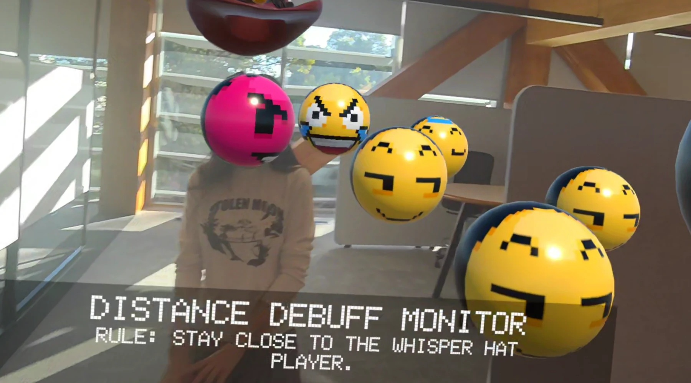
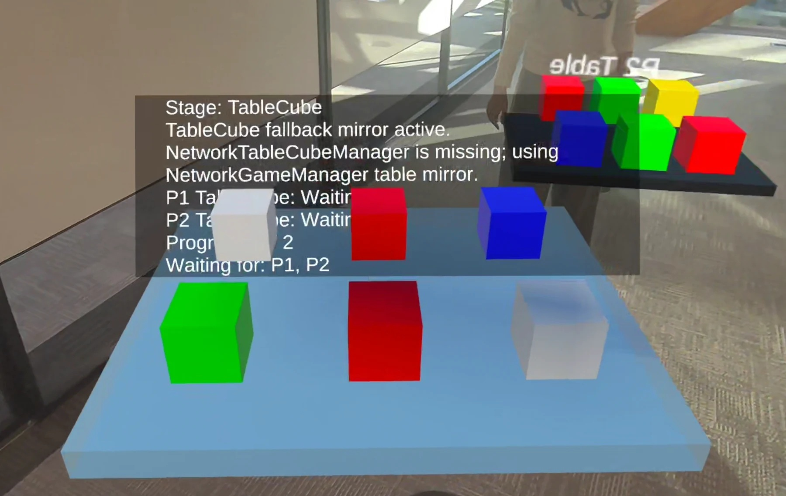

Enter MR
Wear a Meta Quest 3 headset and enter the shared mixed reality space.
RESEARCH PARTICIPATION / DE-BUFF PARTY
Join a co-located multiplayer mixed reality research study using Meta Quest 3 and help us investigate socially meaningful interaction in shared physical space.
Limited places available - register your interest. Recruitment remains open while the approved poster is displayed; if the poster has been removed, recruitment has closed.
The study uses a four-player co-located MR prototype. The full study takes approximately 55–75 minutes, including a brief online survey, introduction, MR session, and guided group discussion. During the session, you will move through a series of social and collaborative activities while sharing the same physical environment with the other participants.
 FIG. 01
FIG. 01
Select a visible role cue that introduces a behavioural condition for the session.
Conceptual illustration
FIG. 02Choose and share an expressive visual while exploring clues distributed through the shared space.
Conceptual illustration
FIG. 03Coordinate around a shared table and respond to synchronized spatial feedback as a group.
Conceptual illustration FIG. 04
FIG. 04
Work together using distributed clues to solve a shared spatial puzzle in mixed reality.
Conceptual illustrationThe study is designed as one continuous shared session rather than a set of isolated tasks.
Wear a Meta Quest 3 headset and enter the shared mixed reality space.
Play and communicate with three other participants in the same room.
Take part in the guided group discussion and complete the approved post-experience feedback activities.
STUDY DETAILS
WHO CAN PARTICIPATE?
Key eligibility requirements from the approved study materials are listed below. Please read the Information Letter for full details before registering your interest.
INTERESTED?
Please read the Information Letter first. If you remain interested, use the email button to contact the researcher and arrange a suitable session time. Registering interest does not constitute consent.
Register your interest ↗ Read Information Letter ↗CURIOUS ABOUT DE-BUFF PARTY?
You can explore an optional overview of De-buff Party and the study activities before deciding whether you would like to participate.
No prior knowledge of the game is required to participate. All participants will receive the same gameplay briefing before the MR session.
Chief Investigator for this study.
This study has been approved by the Murdoch University Human Research Ethics Committee (Approval No. 2026/003).
Scan to open
krisshieh.com/participate/